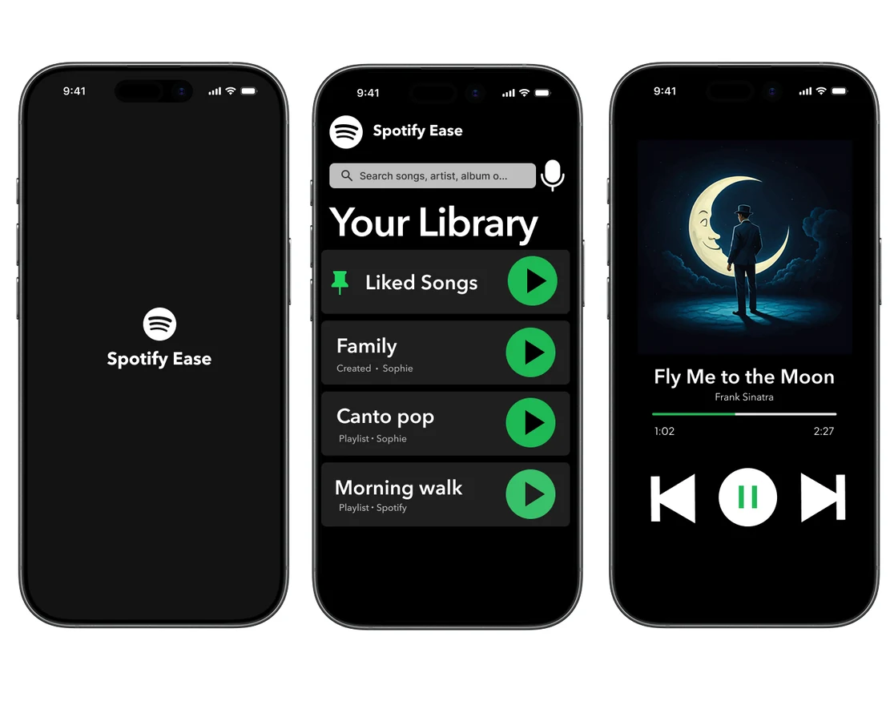
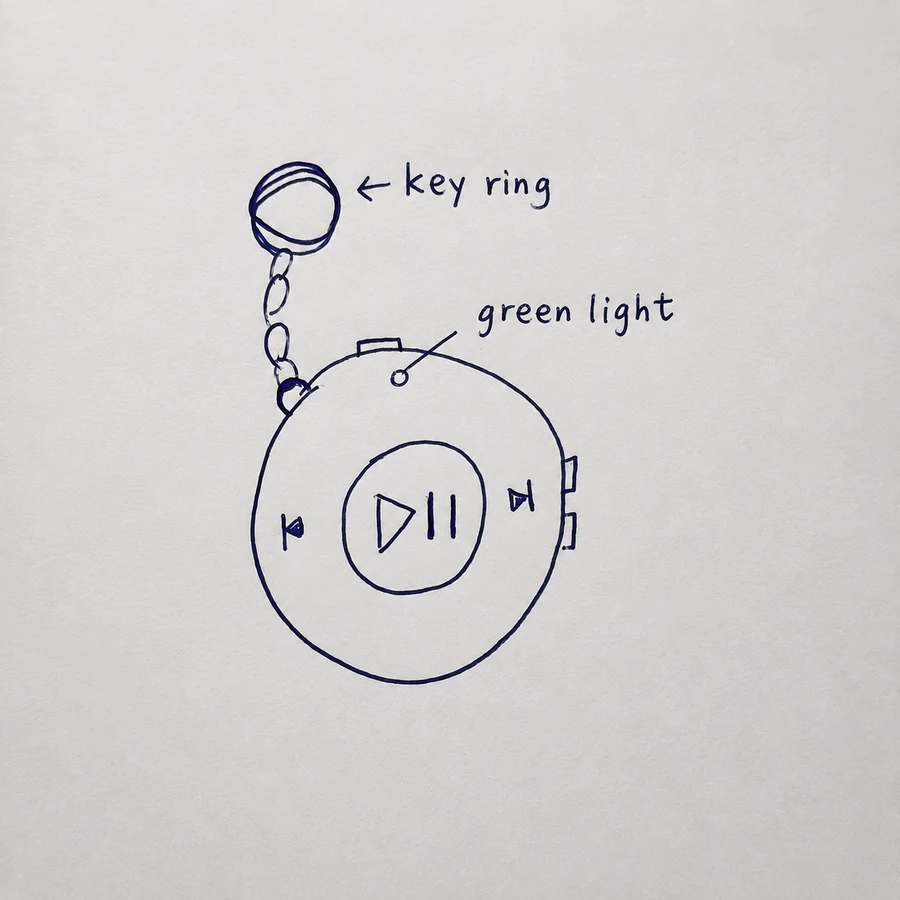
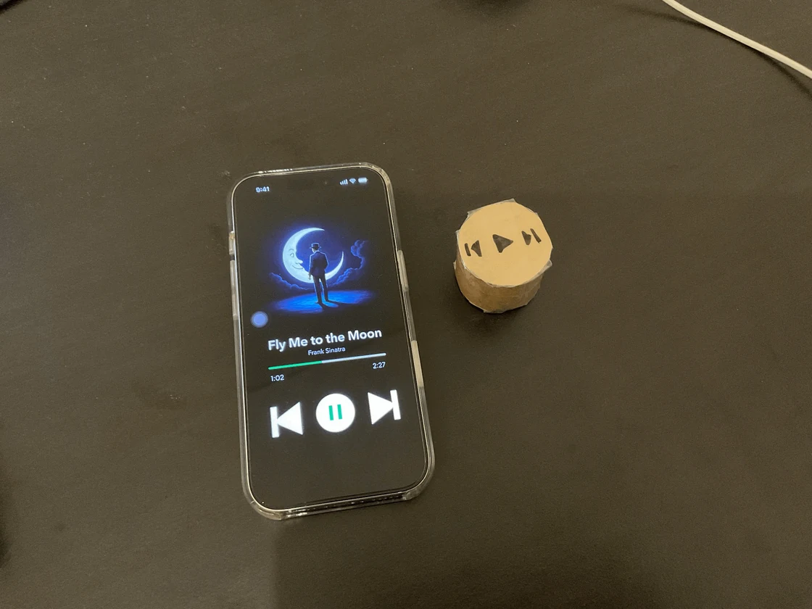
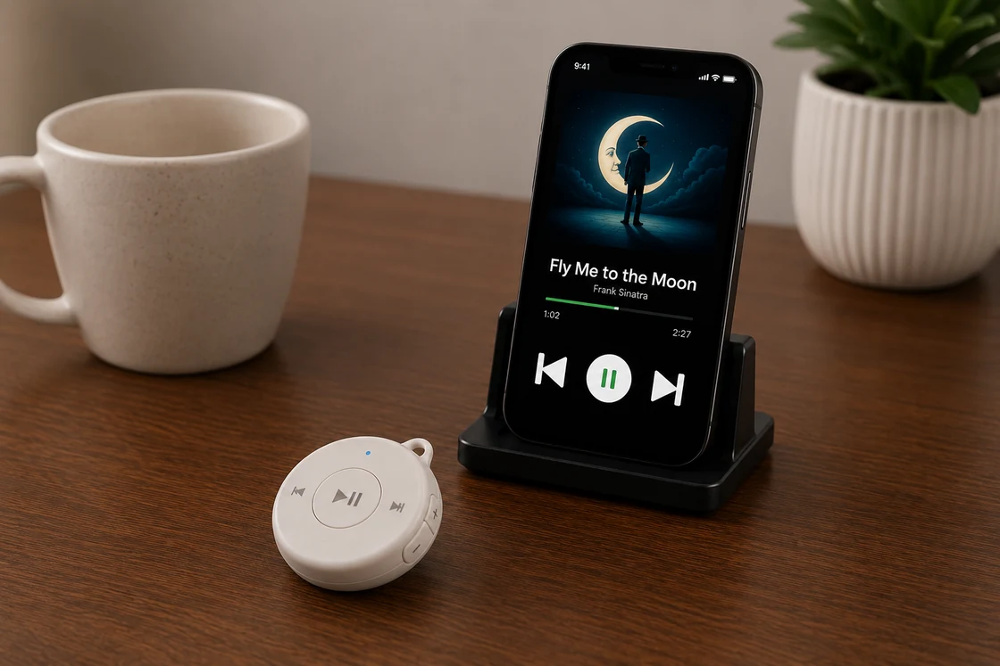

Early interaction study
Spotify Ease and MusicTag
An interactive reconstruction of the early three-screen flow. Choose a playlist on the phone, then try the remote for playback and volume.
Spotify Ease
MusicTag
Simulated physical controls
Design progression
From three screens to a complete listening flow.
The early concept established the library-first layout and the phone–remote split. The later prototype adds explicit audio output, recovery paths, listening preferences and a practical button guide.
Prototype archive
Interface and hardware explorations







